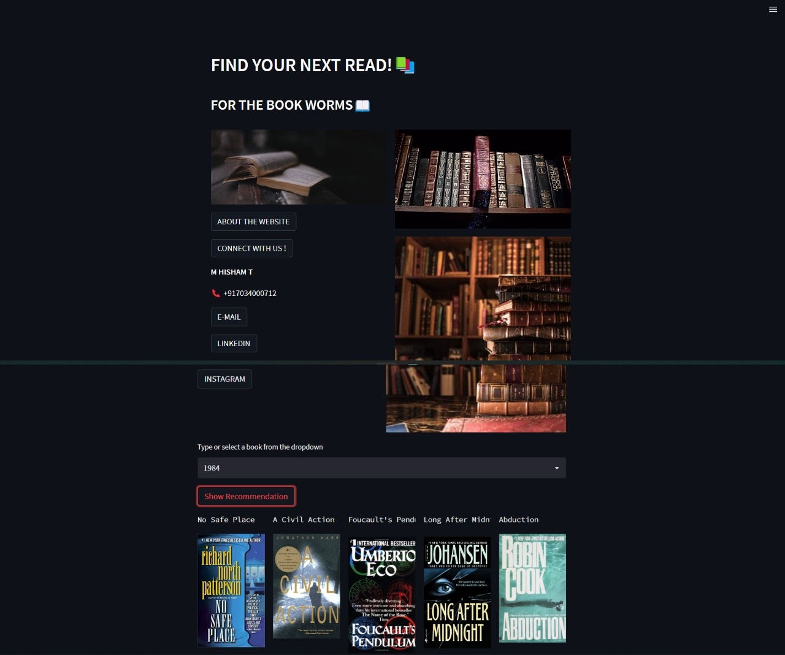
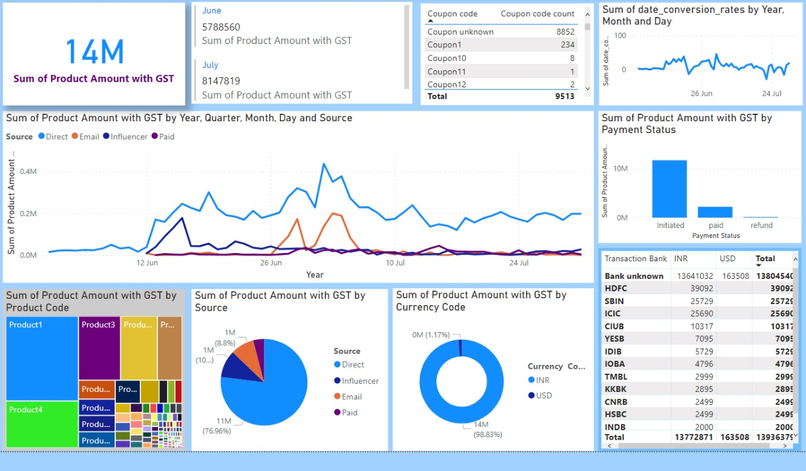
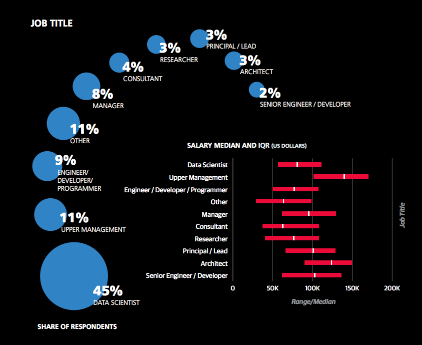
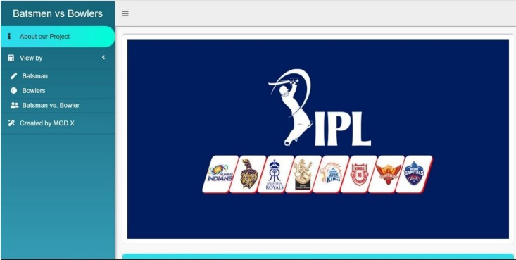

This is a streamlit web application that could recommend books based on a user's interest or user-defined books.
Three files containing; the Name of the books, Ratings of the books, and the Users of the books, were taken.
The result was interpreted using KNN classification.
At the end a website was created to save time and reduce the domain for an individual so that he/she will be less confused and can get better options.

The objective of this project was to conduct comprehensive Exploratory Data Analysis (EDA) in Python to extract actionable insights, including sales trends, product performance, and
payment mode preferences. Sales data was extracted from GUVI, an educational company.
Crafted a dynamic Sales Performance Dashboard using PowerBI, enabling data-driven decision-making.
Then, utilized a range of PowerBI tools to create captivating visualizations, including pie charts, bar charts, and parameter comparisons.
At the end, employed interactive features like filters and slicers for real-time data exploration.


The purpose of doing this project was to get more familiar with various SQL queries and to see how relational databases can be manipulated.
Data Science Salaries from an online source were taken and queries were performed to get important insights.
Insights like the highest salary, salary of an experienced candidate, salary paid in different countries, etc were observed.
Clauses like Group by, Union, Join, Update, Having, Order by, etc were used.
The dataset used, contained three tables that were combined and manipulated using the JOIN clause.

The objective of the project was to make it easy to understand the overall overview of IPL for a newbie. The project wa done using R Shiny. The performance of players was analysed as batsmen and bowlers based on strike rate, economy rate, the sum of runs, and runs (scored/conceded) per
season and the strike rate of selected batsmen against a selected bowler in a season provided they have played against each other and to represent
this information visually.
At the end a dashboard was created, coded on R using Shiny, an R package that makes building interactive web apps straight from R easy.

PCA is a tool that is used to reduce the dimension of the data. It allows us to reduce the dimension of the data without much loss of information. PCA reduces the dimension by finding a few orthogonal linear combinations (principal components) of the original variables with the largest variance. The objective of the project was to explain the applications of PCA using 4 datasets in the simplest form. The applications explained were: Dimensionality Reduction, Obfuscating Data, Noise Reduction, and Anomaly Detection.